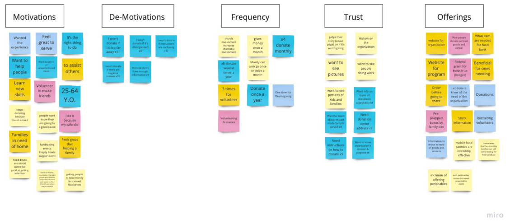
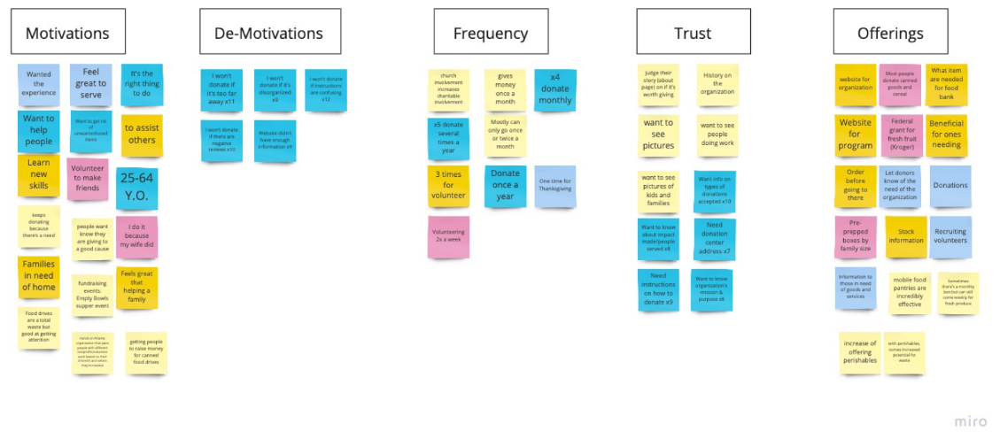
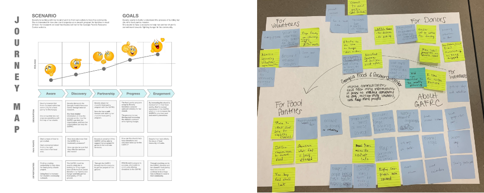
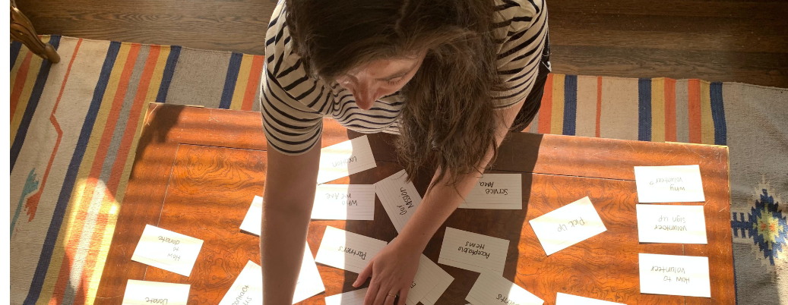
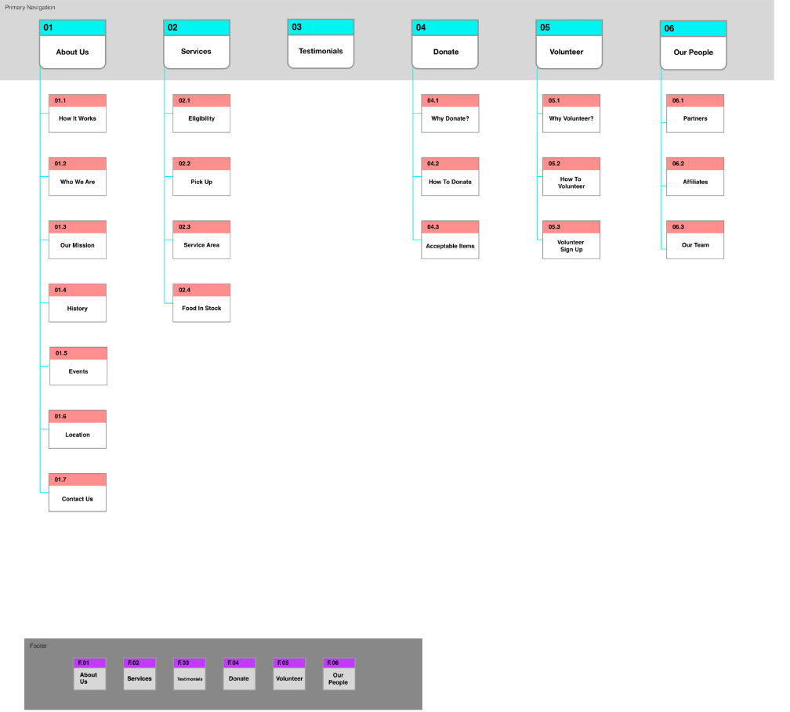
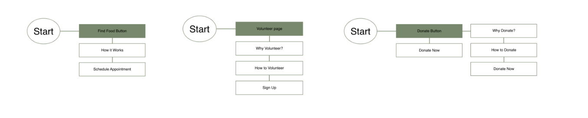
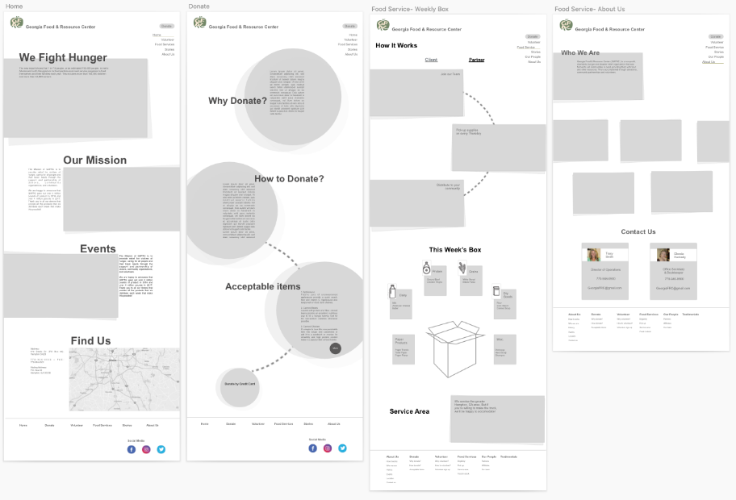

The Problem
The Georgia Food & Resource Center’s website was designed to inform their community on their mission and food bank/pantry offerings. We observed that their website wasn’t effectively meeting these goals, which caused confusion regarding the GAFRC’s business and services.
The Solution
Improve the GAFRC’s dissemination of information on their services so that our customers are successful based on an increase in A) food distribution to those in need, B) donations to the organization, and C) volunteer work within the organization.
Research
Our first step was to perform a deep dive into the Georgia Food & Resource Center’s website. Uncovering every page and every link, we became well versed in what the GAFRC had to offer. We performed a heuristic analysis of the site as a whole to better understand the site’s strengths and weaknesses. We found that the site’s advantage was its simplicity and consistency. This also proved to be its disadvantage as well since the content lacked enough information for anyone to take action.
The big takeaways were that the GAFRC redesign needs to have clear information hierarchy, provide more detail about their services and food offerings, and showcase their impact on the community.
We compiled our qualitative interview data, compared notes, and formalized our key insights into digital notes via Miro. We then organized the like-minded data and created our affinity map.
At this point, we were ready to define the problem, hypothesis, and value proposition. This ultimately led to us developing a greater understanding of GAFRC’s business model and purpose.
 

Problem Statement
The Georgia Food & Resource Center’s website was designed to inform their community on their mission and food bank/pantry offerings. We have observed that their website isn’t effectively meeting these goals, which is causing confusion regarding the GAFRC’s business and services.
How might we improve the GAFRC’s dissemination of information on their services so that our customers are successful based on an increase in A) food distribution to those in need, B) donations to the organization, and C) volunteer work within the organization?
Hypothesis Statement
We believe that increased attention to content and accessibility of information regarding the GAFRC for the clients, donors, and volunteers will achieve greater community outreach concerning the issue of food insecurity.
Value Proposition Statement
We’re working to re-design the Georgia Food & Resource Center website to help clients, donors, and volunteers solve the issue of food insecurity in their community.
Why we’re better: We offer clear, direct information that helps clients, donors, and volunteers take immediate action to reach their goals and fight food insecurity.
Why we’re believable: We’re an honest, local community effort to fight hunger in our area.
Now that we had a better understanding of the business, we could begin ideating on how a site redesign could benefit a user. We began to brainstorm on how the user would interact with the site, the site’s information architecture, and what value could be added to the site’s experience.
To better understand how the user would interact with the site, we created a Journey Map to illustrate a user experience.
Ideation
After formulating what essential elements and functions our web redesign should contain, we began ideating on design and structure of the GAFRC site. By taking the ideas generated in our Affinity Map phase, we worked to create a Mind Map to better understand feature prioritization and relationships to one another.

Next we started to sketch out different ideas for home page design. We each had our own ideas, but brainstorming together helped us get on the same page and work towards consistent design.
Information Architecture
We performed a card sorting exercise to extract what essential navigation elements should be included. We each added existing site pages and content ideas from our affinity map on to cards. Then we collaborated to modify our cards and created a consistent vision for what the site should include.
We created copies of our final card set and ran tests between two participants to discover how those without prior knowledge of the site would logically group the information.


Finally, we compared the results and created a draft of the official site map.
We took insights from the journey map and card sorting exercise to create a task flow. This helped us better understand the user’s interaction with the site while performing specific tasks based on the new content organization.
Three task flows were developed to represent the largest portion of our users.

Wireframes
Originally, the homepage was bare bones. It explained the GAFRC’s purpose in two sentences, but needed additional content so users could skim the first page and understand exactly who they are, what they do, and where they can go next to take action.
To achieve this, we included statistics on food insecurity in America to further state why the organization exists. We also added their mission statement, upcoming events, location, and contact information to describe their purpose and the area they serve.
One of the major problems with the website was lack of guidance for users. It wasn’t clear where to go to find information for the individual goals of clients, donors, volunteers and partnering organizations. We separated donor, volunteer, and partner/client pages to help them take action based on their own needs.

We developed clear, simple steps and benefits to donors and volunteers if they wanted to participate or give to the organization.
UI Style
The original UI style representative of who the organization was or their mission. It was outdated, inconsistent, and lacked meaning.
We selected various greens to better portray the organization and their dedication to fight hunger -- health, fairness, hope, growth, and prosperity.
The typeface needed to be simple and easy to read, so we selected a combination of Arial and Helvetica.

User Testing & Iteration
Based on user testing, we moved the donate button to the top of the donate page so users did not have to scroll to take immediate action.
Testers pointed out that it wasn’t clear for clients (individuals in search of food) to easily find information important to them.
We added Find Food to our navigation and gave Partners its own section. This was a significant finding since both of these users have completely different end goals.

Summary
The Georgia Food and Resource Center already had a great mission and purpose, but needed a better outlet to communicate that to people. With this redesign, the GAFRC will have better visibility of their organization and opportunities available for their primary users. This will help them expand their outreach and grow resources to help fight food insecurity in Georgia.
In the future, we would really like the opportunity to do user testing with clients. They may have provided insight we didn’t capture with our interviews and testing with donors, volunteers and stakeholders.